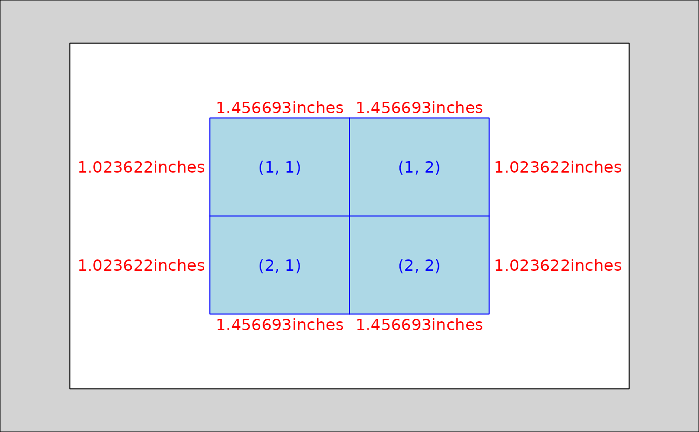

Convert a page size data.frame to a Grid layout object
Usage
page_to_layout(
page,
margins = NULL,
region = NULL,
ncol = 1,
nrow = 1,
gutter = NULL,
widths = NULL,
heights = NULL,
units = "in",
respect = TRUE,
just = "center",
cols = c("width", "height")
)Arguments
- page
A page size data.frame from
get_page_size()or a data.frame or list frommake_page_size().- margins
A numeric list or vector or a margin class object. Defaults to
NULL. margins are removed from the overall layout width and height.- region
Optional. An additional page data.frame where the region width and height are used as the column width and row height.
- ncol
An integer describing the number of columns in the layout.
- nrow
An integer describing the number of rows in the layout.
- gutter
Gutter width/height. Not yet implemented.
- widths
A numeric vector or unit object describing the widths of the columns in the layout.
- heights
A numeric vector or unit object describing the heights of the rows in the layout.
- units
Passed to default.units parameter of
grid::grid.layout().- respect
A logical value or a numeric matrix. If a logical, this indicates whether row heights and column widths should respect each other. If a matrix, non-zero values indicate that the corresponding row and column should be respected (see examples below).
- just
A string or numeric vector specifying how the layout should be justified if it is not the same size as its parent viewport. If there are two values, the first value specifies horizontal justification and the second value specifies vertical justification. Possible string values are:
"left","right","centre","center","bottom", and"top". For numeric values, 0 means left alignment and 1 means right alignment. NOTE that in this context,"left", for example, means align the left edge of the left-most layout column with the left edge of the parent viewport.- cols
Column names to use for width and height columns. Defaults to c("width", "height"). Must be length 2 and the first value is always used as as the width name and the second as the height.
Examples
a8_layout <-
page_to_layout(
get_paper("A8", orientation = "landscape"),
ncol = 2,
nrow = 2
)
grid::grid.show.layout(a8_layout)
